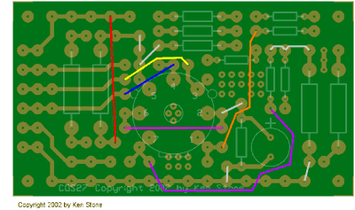
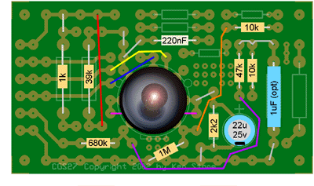
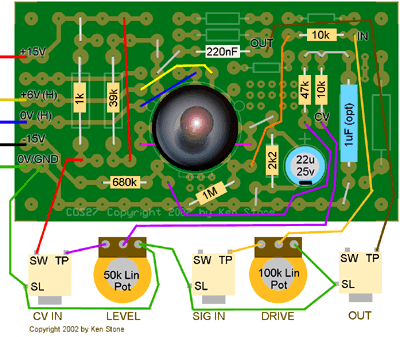
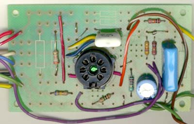
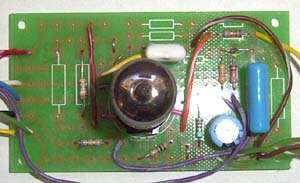

|
Tube experimenter board for music synthesizers.
This circuit board was designed to allow for easier assembly of 7 pin tube based synthesizer circuits. Going on the number of requests I have had for a tube module that runs on +/- 15 volts, the first project I present using this board is exactly that. It is a simple VCA that doubles as a wave folder/distortion unit. There are no dangers in connecting this to solid state modules due to the voltages in use, and the fact that this is really a voltage controlled attenuator, and not an amplifier. There is about 50% signal level loss. How to use this module: Connect a signal such as a VCO output to the signal input of the tube module. Feed the output to an amplifier or other signal processing module. Turn the LEVEL pot to maximum. This sets the gain to maximum. When fed an 8V peak to peak triangle wave, the first half of the travel of the DRIVE pot acts as an input level control. The second half of the travel sets the amount of overdrive/wave folding. A DC offset voltage can be added to the input signal via an external CD mixer to allow shifting of the fold point, animating the output signal. A control voltage can be used to control the output level, in which case the LEVEL pot controls the amount of effect the control voltage has. This signal needs to be above 0 volts to turn the VCA on, though negative voltages will not hurt it. put. A little on how it works
The schematic of the VCA/Wave folder. For a more detailed discussion on how a tube VCA works, see Audio Synthesis via Vacuum Tubes The 1uF capacitor is to reduce any clicks caused though CV bleed-through. The 1M on pin 1 of the tune is really only needed if you do not include the DRIVE potentiometer. While I have specified 50k and 100k pots, the values are not critical. Anything between 20k and 100k would be fine. The tube is not really critical either, though pinouts will vary depending on the tube selected. I chose this tube simply because I have a lot of them.
Construction
The component overlay. As you can tell, it is rather generic. Before you start assembly, check the board for etching faults. Look for any shorts between tracks, or open circuits due to over etching. Take this opportunity to sand the edges of the board if needed, removing any splinters or rough edges. When happy with the board, use wire and parts placement as shown in the following diagrams.



The tube heater can be powered from 5 to 6 volts DC, as is convenient. It is best if the heater 0 volt wire is not the same wire that is the signal ground, though they should be connected together back at the power supply. The resistors can all be 1/4 watt, and capacitors with a 50v rating will be quite adequate.  Above view without the tube in the socket.  Above view with the tube in the socket.
Notes:
Parts list This is a guide only. Parts needed will vary with individual constructor's needs. If anyone is interested in buying these boards, please check the PCBs for Sale page to see if I have any in stock.
Can't find the parts? See the parts FAQ to see if I've already answered the question. Also see the CGS Synth discussion group.
Article, art & design copyright 2001 by Ken Stone
| ||||||||||||||||||||||||||||||||||||